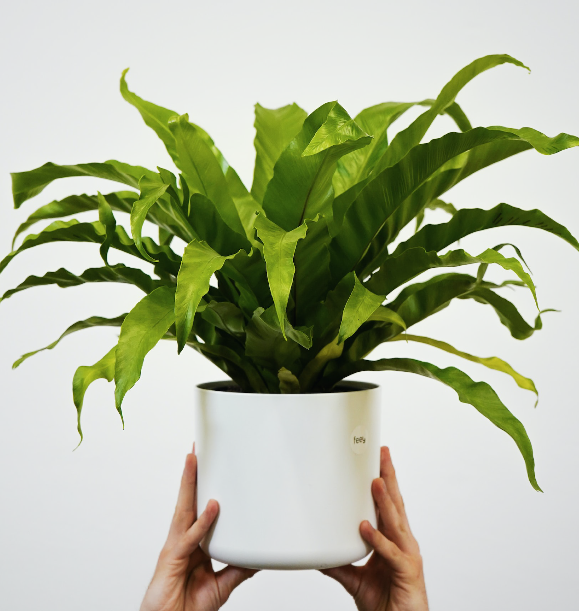

←
Bird's Nest Fern
Asplenium nidus
Price: $12.76 (Home Depot)
Growing Conditions:
- Medium to bright indirect light/partial shade
- Add humidity occasionally by misting the fronds (leaves)
- Fertilize monthly during growing season
- Water soil around the bulb when it feels dry
Fact: With proper care, this plant can live for approximately 15 years!
(Source)